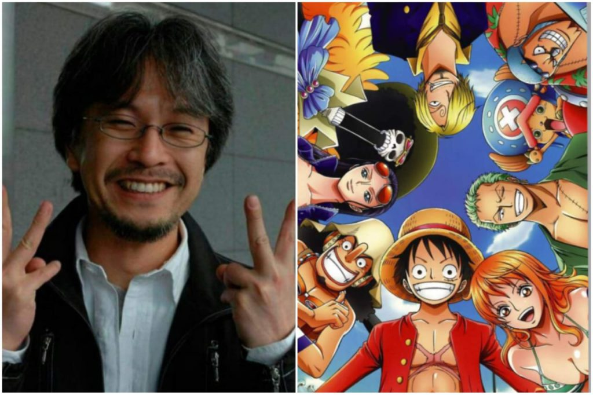

Eiichirō Oda
Mangaka japonés conocido por su serie de manga One Piece

De tener la aspiracion de ser Mangaka desde los 4 años, a hacer el manga mas popular hasta la fecha.
Aqui hay una linea de tiempo de la carrera de Eiichirō Oda:
- 1975 - nace Oda en Kumamoto, Japón
- 1992 - gano el segudo premio de los Tezuka Awards por un manga de vaqueros.
Tras estos reconocimientos logro trabajar en la revista Weekly Shonen Jump. - 1993 - tuvo dos grandes exitos; el primero fue con su obra Kamin kara no Present y el segundo ganando el concurso mensual de talentos con el titulo The Lonely Demon
- 1994 - despues de abando nar se mudo a Tokio como asistente del gran mangaka Nobuhiro Watsuki en su obra Rurouni Kenshin.
En este tiempo fue donde dibujo Monsters publicada en la revista Autum Special de la Weekly Jump y tambien fue el primer vistaso a dos piratas en un one-shot, llamado Romance Dawn. - 1996 - se hizo publicacion de Romance Dawn en Akamaru Jump y la Weekly Shonen Jump, en la cual uno de los piratas se llamaba Monkey D. Luffy, el futuro protagonista de One Piece
- 1997 - One Piece aparece por primera vez en la revista antológica Shonen Jump, ganando esta el Hot Step Award, premio a la mejor obra publicada en la revista.
- 2005 - One Piece logra recaudar 100 millones de volumenes en febrero.
- 2007 - Oda colabora con Akira Toriyama y Mitsutoshi Shimaburkuro para crear un one-shot llamado Cross Epoch.
- 2011 - One Piece logra recaudar 200 millones de volumenes en febrero.
- 2013 - One Piece ganó la edición 41° de la Japan Cartoonists Association Award y logra circular en todo el mundo mas de 345 millones de volumenes.
- 2015 - One Piece tras un gran numero total de ventas, obtiene el reconocimiento de "Mayor cantidad de copias editadas de la misma obra cómic realizado por un único autor" por parte del Record Guinness.